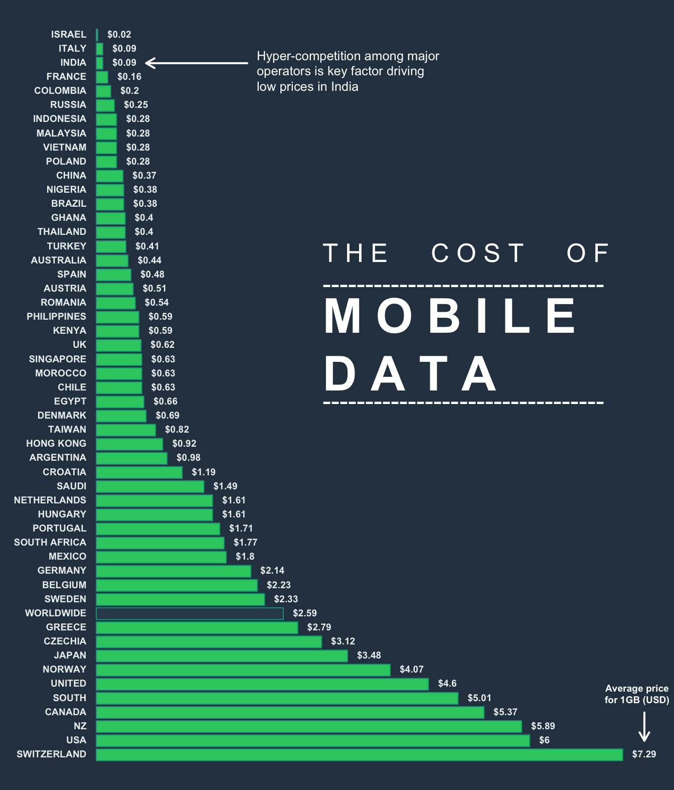
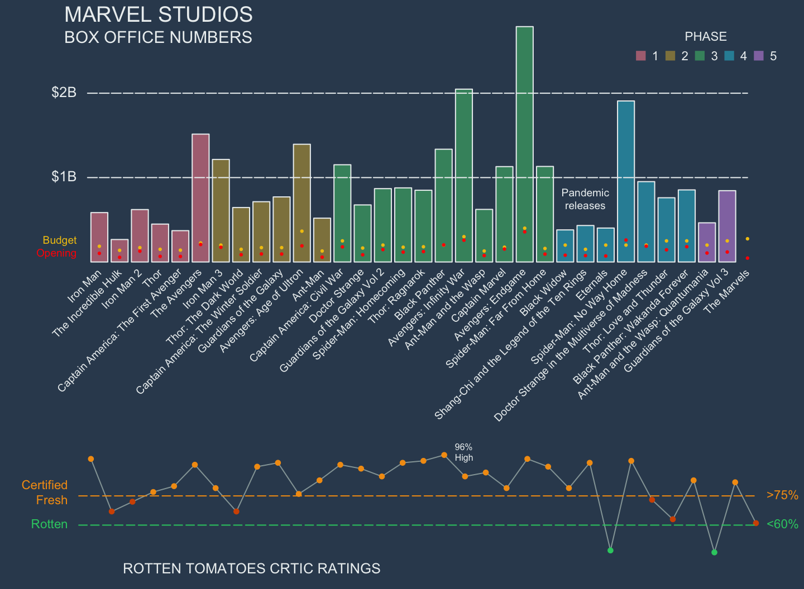
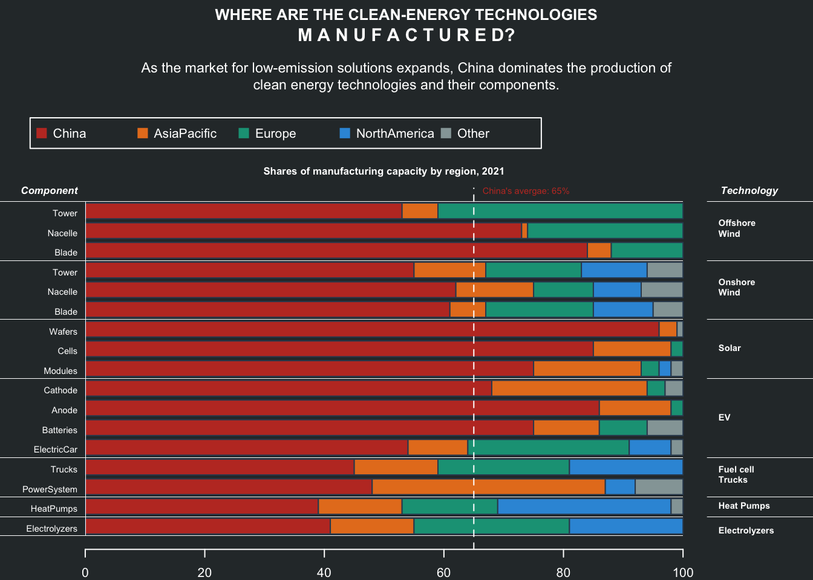

Pretty base plots
Anand Mayakonda
Last updated: 2022-07-16
Checks: 7 0
Knit directory: basegraphics/
This reproducible R Markdown analysis was created with workflowr (version 1.7.0). The Checks tab describes the reproducibility checks that were applied when the results were created. The Past versions tab lists the development history.
Great! Since the R Markdown file has been committed to the Git repository, you know the exact version of the code that produced these results.
Great job! The global environment was empty. Objects defined in the global environment can affect the analysis in your R Markdown file in unknown ways. For reproduciblity it’s best to always run the code in an empty environment.
The command set.seed(20220715) was run prior to running
the code in the R Markdown file. Setting a seed ensures that any results
that rely on randomness, e.g. subsampling or permutations, are
reproducible.
Great job! Recording the operating system, R version, and package versions is critical for reproducibility.
Nice! There were no cached chunks for this analysis, so you can be confident that you successfully produced the results during this run.
Great job! Using relative paths to the files within your workflowr project makes it easier to run your code on other machines.
Great! You are using Git for version control. Tracking code development and connecting the code version to the results is critical for reproducibility.
The results in this page were generated with repository version 4cd02d0. See the Past versions tab to see a history of the changes made to the R Markdown and HTML files.
Note that you need to be careful to ensure that all relevant files for
the analysis have been committed to Git prior to generating the results
(you can use wflow_publish or
wflow_git_commit). workflowr only checks the R Markdown
file, but you know if there are other scripts or data files that it
depends on. Below is the status of the Git repository when the results
were generated:
Ignored files:
Ignored: .DS_Store
Ignored: .Rhistory
Ignored: .Rproj.user/
Ignored: code/.DS_Store
Untracked files:
Untracked: .Rbuildignore
Untracked: LICENSE.md
Untracked: code/01-animate_covid-biorxiv.R
Untracked: code/01-barplot_BechdelTest.R
Untracked: code/02-splitbarplot_PopGermany.R
Untracked: code/03-dotplot_OldestCountry.R
Untracked: code/04-arrowplot_WomenInParliment.R
Untracked: code/05-linechart_COVIDrXiv.R
Untracked: code/05-linechart_CigConsumption.R
Untracked: code/06-scatterplot_RichGDP.R
Untracked: code/07-areachart_USmigration.R
Untracked: code/08-donutplot_TopWealth.R
Note that any generated files, e.g. HTML, png, CSS, etc., are not included in this status report because it is ok for generated content to have uncommitted changes.
These are the previous versions of the repository in which changes were
made to the R Markdown (analysis/baseplots.Rmd) and HTML
(docs/baseplots.html) files. If you’ve configured a remote
Git repository (see ?wflow_git_remote), click on the
hyperlinks in the table below to view the files as they were in that
past version.
| File | Version | Author | Date | Message |
|---|---|---|---|---|
| Rmd | 4cd02d0 | PoisonAlien | 2022-07-16 | workflowr |
Introduction
This document demonstrates the usage of base R graphics
to generate visually appealing plots, without any dependencies.
Most of the plots are recreated as is from several sources. My gratitude to them for all the hard work and making it accessible/open
Acknowledgments:
Finally, I apologize in advance for the uncommentated code. Lets go..
Area chart: US migration
data = read.table(file = "data/07-areachart_USmigration.csv", header = TRUE, sep = ",")
#Maximum
max_pop = max(rowSums(data[,2:ncol(data)]))
layout(mat = matrix(data = c(1:2), nrow = 2), heights = c(0.75, 6))
par(family = "mono")
par(mar = c(0, 0, 0, 0))
plot(NA, xlim = c(0, 1), ylim = c(0, 1), frame.plot = FALSE, axes = FALSE, xlab = NA, ylab = NA)
title_main = "Migration to the US by world region, 1820-2009"
title_main2 = "The numbers are recorded by decade\nFor example, the numbers recorded for 1905 tell us the number of immigrants between 1900 and 1910."
title(main = title_main, cex.main = 1, line = -1, family = "Helvetica", col.main = "#2C3A47", adj = 0)
title(main = title_main2, cex.main = .75, line = -2.5, family = "Helvetica", col.main = "#2C3A47", adj = 0, font.main = 1)
par(mar = c(1, 1, 1, 3))
plot(
NA,
xlim = range(data$Region.and.country.of.last.residence.1),
ylim = c(0, max_pop),
xlab = NA,
ylab = NA,
frame.plot = FALSE,
axes = FALSE
)
abline(h = pretty(c(0, max_pop)), col = "gray90")
axis(side = 4, at = pretty(c(0, max_pop)), labels = paste0(seq(0, 12, 2), "M"), las = 2, tick = FALSE, line = .1, col.axis = "#34495e", cex.axis = 0.8)
axis(side = 1, at = seq(1820, 2000, 10), tick = FALSE, cex.axis = 0.8, col.axis = "#34495e", line = -1.5)
rect(xleft = 1914, ybottom = 0, xright = 1918, ytop = max_pop, col = "#95a5a6", border = NA)
text(x = 1916, y = max_pop, labels = "WW1", cex = 0.75, pos = 3, xpd = TRUE, font = 4, adj = 1)
rect(xleft = 1939, ybottom = 0, xright = 1945, ytop = max_pop, col = "#95a5a6", border = NA)
text(x = 1942, y = max_pop, labels = "WW2", cex = 0.75, pos = 3, xpd = TRUE, font = 4, adj = 1)
cols = c("white", "#1d81a2", "#004765", "#3a96b8", "#48adc0", "#329a9b", "#2b8589",
"#257085", "#005d71",
"#b4241c", "#cd3d2e", "#dc464b", "#e65340",
"#ffa126", "#ffca76", "#ffe59c", "#fffbb1", "#ffdc6b", "#ffbb7f",
"#009a69", "#003f65", "#181818", "black")
#cols = adjustcolor(col = cols, alpha.f = 0.7)
for(i in 22:2){
if(i > 2){
polygon(
c(
data[1, "Region.and.country.of.last.residence.1"],
data$Region.and.country.of.last.residence.1,
data[nrow(data), "Region.and.country.of.last.residence.1"]
),
c(0, rowSums(data[, 2:i, drop = FALSE]), 0),
col = cols[i], border = cols[i]
)
}else{
polygon(data$Region.and.country.of.last.residence.1,
data[,i],
col = cols[i], border = cols[i])
}
}
to_hghlt = c("Germany", "United.Kingdom", "Austria.Hungary","Ireland", "Philippines", "Italy", "Russia", "India", "China", "Mexico", "Central.America")
for(h in to_hghlt){
i = which(colnames(data) == h)
max_idx = which(data[,i] == max(data[,i]))
y_point = data[,i] + rowSums(data[,2:(i-1), drop = FALSE])
text(x = data[max_idx,1], y = y_point[max_idx], labels = colnames(data)[i], cex = 0.55, xpd = TRUE, font = 2, family = "mono", col = "#192a56")
}
text(x = 1900, y = 1e6, label = "EUROPE", col = "white", cex = 1.2, font = 2)
text(x = 1990, y = 2e6, label = "ASIA", col = "white", cex = 1.2, adj = 0.8, font = 2)
text(x = 1990, y = 6e6, label = "AMERICA", col = "#2c3e50", cex = 1.2, adj = 0.7, font = 2)
Parliament plot: German Bundestag
Data source: https://www.tatsachen-ueber-deutschland.de/en/politics-germany/parliament-parties
Acknowledgments: https://www.datawrapper.de/charts
nseats = 736
nrows = 14
seat_distr = c(4, 80, 45, 152, 92, 118, 206, 39)
names(seat_distr) = c("Independent", "AfD", "CSU", "CDU", "FDP", "The Greens", "SPD", "The Left")
seat_cols = c("#7f8c8d", "#f368e0", "#2980b9", "#2c3e50", "#D6A2E8", "#27ae60", "#d35400", "#8e44ad")
names(seat_cols) = names(seat_distr)
#Simple estimate for how many seats (dots) in concentric arcs
n_seats_per_row = ((pi * nrows:1)/sum(pi * nrows:1)) * nseats
n_seats_per_row = ceiling(n_seats_per_row)
x <- seq(0, pi, length.out = n_seats_per_row[1])
xlims = range(cos(x) * nrows)
ylims = range(sin(x) * nrows)
ylims = c(-max(ylims), max(ylims))
plot_data = data.frame()
for(i in nrows:1){
x <- seq(0, pi, length.out = rev(n_seats_per_row)[i])
plot_data = rbind(plot_data, data.frame(cos(x) * i, sin(x) * i, i))
}
colnames(plot_data) = c("x", "y", "row")
plot_data = plot_data[1:nseats,]
#--Comment out the below section to avoid spiral ordering
plot_data_spl = split(plot_data, ~row)
max_row = max(unlist(lapply(plot_data_spl, nrow)))
data_ordered = data.frame()
for(i in seq_len(max_row)){
data_i = lapply(plot_data_spl, function(dat){
dat[i,]
})
data_i = do.call("rbind", data_i)
data_ordered = rbind(data_ordered, data_i)
}
#plot_data = data_ordered[!is.na(data_ordered$x),]
#--
plot_data$party = rep(x = names(seat_distr), seat_distr)
layout(mat = matrix(data = c(1:3), nrow = 3), heights = c(1, 6, 0.75))
par(family = "mono")
par(mar = c(0, 0, 1, 0))
plot(NA, xlim = c(0, 1), ylim = c(0, 1), frame.plot = FALSE, axes = FALSE, xlab = NA, ylab = NA)
title_main = "The 20th Bundestag"
title_main2 = "Parliament & Parties of the German Bundestag"
title_sub = "736 members of parliament are represented"
title(main = title_main, cex.main = 1.8, line = -0.5, family = "Helvetica", col.main = "#2C3A47")
title(main = title_main2, cex.main = 1.5, line = -2, family = "Helvetica", col.main = "#2C3A47")
title(main = title_sub, cex.main = 1.2, font = 3, line = -3.25,family = "Helvetica", col.main = "#2C3A47")
par(mar = c(0.75, 0, 0.75, 0))
plot(NA, xlim = xlims, ylim = ylims , "", asp = 1, xlab = NA, ylab = NA, frame.plot = FALSE, axes = FALSE)
points(x = plot_data$x, y = plot_data$y, pch = 19, col = seat_cols[plot_data$party], cex = 0.65)
x <- seq(0, pi, length.out = 500)
#Outer ring
points(cos(x) * (nrows+0.5), sin(x) * (nrows+0.5), type = "l", lwd = 3, col = "#ea8685")
points(cos(x) * -(nrows+0.5), sin(x) * -(nrows+0.5), type = "l", lwd = 3, col = "#ea8685")
#Outer ring 2
rng_col2 = adjustcolor("#ea8685", 0.4)
points(cos(x) * (nrows+1), sin(x) * (nrows+1), type = "l", lwd = 3, col = rng_col2)
points(cos(x) * -(nrows+1), sin(x) * -(nrows+1), type = "l", lwd = 3, col = rng_col2)
text(x = 0, -8, label = "736\nSEATS", font = 2, col = "#34495e", cex = 2.5)
par(mar = c(0, 0, 0, 0), family = "Helvetica")
plot(NA, xlim = c(0, 1), ylim = c(0, 1), frame.plot = FALSE, axes = FALSE, xlab = NA, ylab = NA)
legend(
x = "bottom",
legend = paste0(names(seat_distr), " (", seat_distr, ")"),
ncol = 4,
text.col = seat_cols,
bty = "n", xpd = TRUE, cex = 1, text.font = 2
)
Heatmap: Measles
Recreating the popular maeasles vaccine heatmap from WSJ
acknowledgments:
- Initial attempt in R by Mick Watson in base R using heatmp and gplots
- ggplot version
- ComplexHeatmap by Zuguang Gu
Raw data matrix obtained as a part of ComplexHeatmap
package.
NOTE: Counts are raw and not normalized for per 100K as in original WSJ plot. Color grading are according to the breaks in the number of cases rather than being continuous.
mat = readRDS(system.file("extdata", "measles.rds", package = "ComplexHeatmap"))
#Get rid of some of the entries
rem_states = c(
"AMERICAN.SAMOA",
"GUAM",
"NEW.YORK.CITY",
"NORTHERN.MARIANA.ISLANDS",
"PAC.TRUST.TERR",
"PUERTO.RICO",
"RHODE.ISLAND",
"UPSTATE.NEW.YORK",
"VIRGIN.ISLANDS"
)
#Since image() flips the data, sort it before plotting
us_stats = sort(setdiff(x = rownames(mat), rem_states), decreasing = TRUE)
mat = mat[us_stats,]
colpal = c(
"white", "#ecf0f1",
"#e7f0fa",
"#c9e2f6",
"#95cbee",
"#0099dc",
"#4ab04a",
"#ffd73e",
"#eec73a",
"#e29421",
"#e29421",
"#f05336",
"#ce472e"
)
break_pnts = c(0, 50, 100, 250, 500, 1000, 2000, 4000, 5000, 10000, 25000, 50000, 100000, 125000)
layout(mat = matrix(data = c(1:2), nrow = 2), heights = c(6, 0.75))
par(mar = c(1, 6, 3, 0.5), family = "mono")
image(y = 1:nrow(mat), x = 1:ncol(mat),
z = t(mat),
axes = FALSE,
xaxt = "n",
yaxt = "n",
xlab = "",
ylab = "", col = colpal, breaks = break_pnts
)
#
#contour(t(mat), add = TRUE, drawlabels = FALSE)
abline(h = (1:nrow(mat)) + 0.5, v = (1:ncol(mat)) + 0.5, col = "white")
mtext(
text = colnames(t(mat)),
side = 2,
at = 1:nrow(mat),
font = 2,
line = 0.4,
las = 2,
cex = 0.5,
col = "#34495e"
)
vac_idx = which(colnames(x = mat) == "1963")
abline(v = vac_idx-0.5, col = "black", lwd = 1.2)
lab_at = seq(1930, 2000, 10)
for(lab in lab_at){
lab_idx = which(colnames(mat) == lab)
axis(side = 1, at = lab_idx, labels = lab, col.axis = "#34495e", tick = F, line = -1, cex.axis = 0.6, gap.axis = 0.1, xpd = TRUE)
}
title_main = "Impact of vacccines on Measles in the US states (1930-2001)"
title_sub = "Vaccine introduced in 1963"
title(main = title_main, adj = 0, cex.main = 0.95, line = 2)
title(main = title_sub, adj = 0.5, cex.main = 0.8, line = 1, font = 3, adj = 0)
par(mar = c(0, 0, 0, 0), family = "mono")
plot(NA, xlim = c(0, 1), ylim = c(0, 1), frame.plot = FALSE, axes = FALSE, xlab = NA, ylab = NA)
legend(x = "center", legend = break_pnts, col = colpal, pch = 15, ncol = 7, bty = "n", cex = 0.65, title = "no. of cases, upto")
Bubble charts: Rich vs Health
Data obtained from datawrapper.
data = data.table::fread(input = "data/06-scatterplot_RichGDP.csv", data.table = FALSE)
data$population = as.numeric(data$population)
#data$bub_size = data$population/max(data$population, na.rm = TRUE)
cols = c("#34495e", "#ff5252", "#34ace0", "#ffb142", "#218c74", "#84817a")
cols = adjustcolor(col = cols, alpha.f = 0.6)
names(cols) = names(table(data$regions))
title_main = "The richer, the healthier"
title_sub = "GDP per person adjusted for differences in purchasing power (in 2011 international dollars) and life expectancy in years for selected countries, 2018.\nThe bigger a circle, the more people live in a country."
layout(mat = matrix(data = c(1:2), nrow = 2), heights = c(2, 6))
par(mar = c(0, 0, 0, 0))
plot(NA, xlim = c(0, 1), ylim = c(0, 1), frame.plot = FALSE, axes = FALSE, xlab = NA, ylab = NA)
text(x = 0, y = 0.8, labels = title_main, cex = 1, font = 2, adj = 0)
text(x = 0, y = 0.6, labels = title_sub, cex = 0.6, font = 3, adj = 0)
legend(x = .1, y = 0.4, legend = names(cols), col = cols, pch = 19, ncol = 3, bty = "n", cex = 0.7)
data$logGDP = log10(data$`GDP per capita`)
par(mar = c(2, 2, 0, 1))
plot(NA, xlim = range(pretty(data$logGDP)), ylim = c(50, 90), xlab = NA, ylab = NA, frame.plot = FALSE, axes = FALSE)
axl_lb = round(10^pretty(data$logGDP))
axl_lb = ifelse(test = axl_lb > 1000, yes = paste0(round(axl_lb/1000), "k"), no = round(axl_lb))
axis(side = 1, at = pretty(data$logGDP), labels = axl_lb, col.axis = "#7f8c8d", tick = FALSE, col = "gray", cex.axis = 0.8, line = -.5)
axis(side = 2, at = seq(50, 100, 10), col.axis = "#7f8c8d", tick = FALSE, col = "gray", cex.axis = 0.8, las = 2, line = -0.5)
abline(h = seq(50, 100, 10), v = pretty(data$logGDP), col = "gray90")
text(x = rev(pretty(data$logGDP))[1], y = 50, labels = "GDP per capita", col = "#34495e", adj = 1, cex = 0.7, font = 2)
text(x = pretty(data$logGDP)[1], y = 90, labels = "Life Expectancy", col = "#34495e", adj = 0, cex = 0.7, font = 2)
symbols(
x = data$logGDP,
y = data$`Life expectancy`,
circles = sqrt(data$population / pi),
inches = 0.18, add = TRUE, bg = cols[data$regions], fg = cols[data$regions]
)
bot_cntrs = data[data$country %in% c("South Africa", "China", "Afghanistan", "Lesotho", "United Arab Emirates"),]
text(x = bot_cntrs$logGDP, y = bot_cntrs$`Life expectancy`, labels = bot_cntrs$country, pos = 1, cex = 0.6, col = "#2c2c54")
top_cntrs = data[data$country %in% c("Liberia", "Timor-Leste", "Nicaragua", "Costa Rica"),]
text(x = top_cntrs$logGDP, y = top_cntrs$`Life expectancy`, labels = top_cntrs$country, pos = 3, cex = 0.6, col = "#2c2c54")Donut charts: Wealthiset percentage
Data obtained from datawrapper.
data = read.table("data/08-donutplot_TopWealth.csv", sep = ",", header = TRUE)Warning in read.table("data/08-donutplot_TopWealth.csv", sep = ",", header
= TRUE): incomplete final line found by readTableHeader on 'data/08-
donutplot_TopWealth.csv'lo =layout(mat = matrix(data = c(1, 1, 1, 2:7), nrow = 3, ncol = 3, byrow = TRUE), heights = c(1.7, 3, 3))
par(mar = c(0, 0, 0, 0))
title_main = "Who gets which slice of the pie?"
title_sub = "How much of the wealth of a country do the poorest 50% own?\nHow much do the top 10% own?"
plot(NA, xlim = c(0, 1), ylim = c(0, 1), frame.plot = FALSE, axes = FALSE, xlab = NA, ylab = NA)
text(x = 0, y = 0.9, labels = title_main, cex = 1.5, font = 2, adj = 0)
text(x = 0, y = 0.6, labels = title_sub, cex = 1.2, font = 3, adj = 0)
legend(x = .1, y = 0.4, legend = c("bottom 50%", "next 40%", "top 10%"), col = c("#b33939", "#f7f1e3", "#40407a"), pch = 15, ncol = 3, bty = "n", cex = 1.4)
par(mar = c(2, 2, 2, 2))
for (i in 2:ncol(data)) {
pie(
data[, i],
radius = 1,
clockwise = TRUE,
labels = paste0(round(data[, i]), "%"), border = "white",
col = c("#b33939", "#f7f1e3", "#40407a")
)
points(x = 0, y = 0, pch = 19, cex = 10, col = "white", lwd = 0)
title(main = colnames(data)[i], adj = 0)
}
Line chart: COVID19 preprints
Number of COVID19 articles in arxiv preprints
Data obtained from biorxiv API
arxiv_data = read.delim(file = "data/05-linechart_COVIDrxiv.tsv")
arxiv_data$rel_date = as.Date.character(arxiv_data$rel_date)
date_lvls = seq.Date(as.Date(arxiv_data[1,"rel_date"]), as.Date(arxiv_data[nrow(arxiv_data),"rel_date"]), 1)
arxiv_data$date = factor(x = arxiv_data$rel_date, levels = as.character.Date(date_lvls), ordered = TRUE )
biorxiv = data.frame(n_articles = unlist(lapply(split(arxiv_data[arxiv_data$rel_site %in% "bioRxiv",], ~date), nrow)))
medrxiv = data.frame(n_articles = unlist(lapply(split(arxiv_data[arxiv_data$rel_site %in% "medRxiv",], ~date), nrow)))
data = merge(biorxiv, medrxiv, by = "row.names", suffixes = c("_biorxiv", "_medrxiv"))
data$n_articles = rowSums(data[,c("n_articles_biorxiv", "n_articles_medrxiv")])
rownames(data) = data$Row.names
#data = data.frame(n_articles = unlist(lapply(split(arxiv_data, ~date), nrow)))
data$ym = substr(x = rownames(data), start = 1, stop = 7)
data$yr = substr(x = rownames(data), start = 1, stop = 4)
month_lines = cumsum(lapply(split(data, ~ym), nrow))
year_lines = cumsum(lapply(split(data, ~yr), nrow))
#
heatcols = colorRampPalette(c("#EFF3FF", "#C6DBEF", "#9ECAE1", "#6BAED6", "#4292C6", "#2171B5", "#084594"))(180)
par(mar = c(3, 3, 4, 1), family = "mono")
plot(NA, xlim = c(0, nrow(data)), ylim = c(0, 170), frame.plot = FALSE, axes = FALSE, xlab = NA, ylab = NA)
abline(v = month_lines, col = "gray90", lty = 1, lwd = 0.6)
abline(v = year_lines[c("2020", "2021")], col = "#2c3e50", lwd = 0.9)
abline(h = seq(0, 150, 25), col = "gray90", lwd = 0.9, lty = 2)
axis(side = 1, at = month_lines, labels = substr(x = names(month_lines), 6, 7), las = 2, tick = FALSE, cex.axis = 0.6, line = -0.75, font.axis = 3, col.axis = "#95a5a6")
axis(side = 2, at = seq(0, 150, 25), labels = seq(0, 150, 25), las = 2, tick = FALSE, line = -0.5, col.axis = "#95a5a6")
axis(side = 3, at = year_lines[c("2020", "2021")], labels = c("2020", "2021"), tick = FALSE, line = -1, col.axis = "#8e44ad")
pnt_col = "#95a5a6"
# points(
# x = 1:nrow(data),
# y = data$n_articles,
# pch = 20,
# col = adjustcolor(col = pnt_col, alpha.f = .5), cex = 0.9
# )
#lines(smooth.spline(x = 1:nrow(data), y = data$n_articles), col = pnt_col, lwd = 3)
#e67e22
biorxiv_col = "#e67e22"
points(
x = 1:nrow(data),
y = data$n_articles_biorxiv,
pch = 20,
col = adjustcolor(col = biorxiv_col, alpha.f = 0.2), cex = 0.9
)
lines(smooth.spline(x = 1:nrow(data), y = data$n_articles_biorxiv), col = biorxiv_col, lwd = 3)
medrxiv_col = "#27ae60"
points(
x = 1:nrow(data),
y = data$n_articles_medrxiv,
pch = 20,
col = adjustcolor(col = medrxiv_col, alpha.f = 0.2), cex = 0.9
)
lines(smooth.spline(x = 1:nrow(data), y = data$n_articles_medrxiv), col = medrxiv_col, lwd = 3)
#mtext(text = "Month", side = 1, line = 1.5, font = 2)
#mtext(text = "# of articles", side = 2, line = 2, font = 2)
title(main = "Frequency of COVID19 articles in bioRxiv and medRxiv", adj = 0, line = 2, col.main = "#34495e", cex.main = 1)
legend(x = "topleft", legend = c("bioRxiv", "medRxiv"), col = c(biorxiv_col, medrxiv_col), bty = "n", lwd = 2)Line chart: Cigerate consumption
Data obtained from datawrapper.
data = read.table("data/05-linechart_CigConsumption.csv", sep = ",", header = TRUE)
data[data == "null"] = NA
data = apply(data, 2, as.numeric)
data = as.data.frame(data)
rownames(data) = data$country
max_count = max(data[,2:ncol(data)], na.rm = TRUE)
title_main = "The rise and fall of cigarette consumption in developed countries"
title_sub = "Sales of cigarettes per adult per day, in selected countries.\nFigures include manufactured cigarettes, as well as an estimated\nnumber of hand-rolled cigarettes,per adult (ages 15+) per day."
layout(mat = matrix(data = c(1:2), nrow = 2), heights = c(2, 6))
par(mar = c(0, 0, 0, 0))
plot(NA, xlim = c(0, 1), ylim = c(0, 1), frame.plot = FALSE, axes = FALSE, xlab = NA, ylab = NA)
text(x = 0, y = 0.8, labels = title_main, cex = 1, font = 2, adj = 0)
text(x = 0, y = 0.35, labels = title_sub, cex = 1, font = 3, adj = 0)
par(mar = c(3, 2, 0, 1))
plot(NA, xlim = range(data$country), ylim = c(0, max_count), xlab = NA, ylab = NA, frame.plot = FALSE, axes = FALSE)
axis(side = 2, at = seq(0, 12, 2), labels = seq(0, 12, 2), line = 0, col.axis = "gray", cex.axis = 1, las = 2, tick = FALSE)
abline(h = seq(0, 12, 2), lwd = 1, col = "gray90")
text(x = data$country[1], y = 10, labels = "Sold cigarettes\nper day per adult", cex = 0.7, xpd = TRUE, adj = 0)
for(i in 2:ncol(data)){
points(x = data$country, y = data[,i], pch = "", type = "l", col = "#7f8c8d")
}
hghlt = c("United.States", "Germany", "France")
hghlt_cols = c("#c0392b", "#16a085", "#2980b9")
for(hghlt_idx in seq_along(hghlt)){
hghlt_col_idx = which(colnames(data) == hghlt[hghlt_idx])
points(x = data$country, y = data[,hghlt_col_idx], pch = "", type = "l", col = hghlt_cols[hghlt_idx], lwd = 2)
}
text(x = data$country[1], y = c(6:4), labels = hghlt, col = hghlt_cols, adj = 0)
axis(side = 1, at = pretty(data$country), labels = pretty(data$country), line = 0, tick = TRUE, col.axis = "#7f8c8d", col = "#7f8c8d")
Arrow plot: Women in Parliment
Data obtained from datawrapper.
data = read.table("data/04-arrowplot_WomenInParliment.csv", sep = ",", header = TRUE)
colnames(data) = c("Country", "y2000", "y2020", "group")
data$diff = data$y2020 - data$y2000
pan_ratio = unname(unlist(lapply(split(data, ~group), nrow)))
asia = split(data, ~group)[[1]]
eu = split(data, ~group)[[2]]
title_txt = "Most countries have a higher share of women in their national parliaments than twenty years ago"
subtitle_txt = "Proportion of seats held by women in national parliaments, 2000 and 2020,\nin selected countries in Europe, Central Asia, East Asia and the Pacific"
lo = layout(matrix(1:3, ncol = 1), heights = c(2, pan_ratio))
par(mar = c(0, 0, 0, 0))
plot(NA, xlim = c(0, 1), ylim = c(0, 1), frame.plot = FALSE, axes = FALSE, xlab = NA, ylab = NA)
text(x = 0, y = 0.8, labels = title_txt, cex = 1, font = 2, adj = 0)
text(x = 0, y = 0.35, labels = subtitle_txt, cex = 1, font = 3, adj = 0)
par(mar = c(2, 7, 1, 1))
temp = lapply(split(data, ~group), function(dat){
plot(
NA,
xlim = c(0, 50),
ylim = c(1, nrow(dat)),
frame.plot = FALSE,
axes = FALSE,
xlab = NA,
ylab = NA
)
abline(h = 1:nrow(dat), v = c(0, 25, 50), col = "gray90", lwd = 0.6)
abline(v = 0, col = "gray")
rect(xleft = dat$y2000, ybottom = 1:nrow(dat), xright = dat$y2020, ytop = 1:nrow(dat), lwd = 1.5, col = ifelse(test = dat$diff > 0, yes = "#3498db", no = "#eb2f06"), border = ifelse(test = dat$diff > 0, yes = "#3498db", no = "#eb2f06"))
for(i in 1:nrow(dat)){
if(dat$diff[i] > 0){
points(x = dat$y2020[i], y = i, pch = ">", col = "#3498db")
text(x = dat$y2020[i], y = i, labels = paste0(dat$y2020[i], "%"), col = "#0c2461", pos = 4, cex = 0.9, xpd = TRUE)
}else{
points(x = dat$y2020[i], y = i, pch = "<", col = "#eb2f06")
text(x = dat$y2020[i], y = i, labels = paste0(dat$y2000[i], "%"), pos = 2, col = "#eb2f06", cex = 0.9, xpd = TRUE)
}
}
axis(side = 2, at = 1:nrow(dat), labels = dat$Country, las = 2, tick = FALSE, line = -0.75, col = "#2c3e50", cex.axis = 1)
axis(side = 1, at = c(0, 25, 50), labels = paste0(c(0, 25, 50), "%"), tick = FALSE, line = -1, col.axis = "gray50", cex.axis = 1)
title(x = "topright", main = dat$group[1], adj = 1, col.main = "#2c3e50", cex.main = 0.9)
})
bottom_anno = split(data, ~group)[[2]]
bottom_anno = unlist(bottom_anno[nrow(bottom_anno), c(2, 3)])
axis(side = 3, at = bottom_anno, labels = c("2000", "2020"), tick = FALSE, line = -1, col.axis = "#7f8c8d", cex.axis = 0.75)
Dot plot: Oldest country
Data obtained from datawrapper.
data = read.table("data/03-dotplot_OldestCountry.csv", sep = ",", header = TRUE)
data$Country[1:3] = c("Monaco", "Japan", "Germany")
xlims = range(data[,2:4])
par(mar = c(3, 5, 4, 1))
plot(
NA,
xlim = xlims,
ylim = c(1, nrow(data)),
frame.plot = FALSE,
axes = FALSE,
xlab = NA,
ylab = NA
)
abline(h = 1:nrow(data), col = "gray90")
abline(v = pretty(xlims), col = "gray90")
axis(side = 3, at = pretty(xlims), labels = pretty(xlims), col = "gray90", tick = FALSE, line = -1, cex.axis = 0.75, col.axis = "gray50")
for(i in 1:nrow(data)){
combined = rev(data[,"Combined"])[i]
male = rev(data[,"Male"])[i]
female = rev(data[,"Female"])[i]
rect(xleft = male, ybottom = i-0.2, xright = female, ytop = i+0.2, col = "#bdc3c7", border = NA)
points(x = combined, y = i, col = "#34495e", pch = 19, cex = 1.5)
points(x = male, y = i, col = "#60a3bc", pch = 19, cex = 1.5)
points(x = female, y = i, col = "#e58e26", pch = 19, cex = 1.5)
}
legend(
x = 32, y = -0.5,
legend = c("Combined", "Male", "Female"),
border = NA,
ncol = 3,
col = c("#34495e", "#60a3bc", "#e58e26"),
pch = 19,
bty = "n", xpd = TRUE, cex = 0.9, adj = 0)
axis(
side = 2,
at = 1:nrow(data),
labels = rev(data$Country),
tick = FALSE,
cex.axis = 0.8, las = 2, line = -1, col = "#34495e"
)
title(
main = "Germany is the third-oldest country in the world",
line = 3,
adj = 0,
xpd = TRUE,
cex.main = 1,
col.main = "#2c3e50"
)
title(
main = "Median age in the three countries with the oldest population and selected other countries, in years",
line = 2,
adj = 0,
xpd = TRUE,
cex.main = 0.6,
col.main = "#2c3e50"
)
Split barplot: Population Pyramid
Data obtained from datawrapper.
data = read.table("data/02-splitbarplot_PopGermany.csv", sep = ",", header = TRUE)
max_count = max(data[,c("male", "female")]) #Maximum value
par(mar = c(2, 3, 2, 1))
plot(
NA,
xlim = c(-max_count, max_count),
ylim = c(1, nrow(data)),
frame.plot = FALSE,
axes = FALSE,
xlab = NA,
ylab = NA
)
axis(
side = 2,
at = 1:nrow(data)+0.4,
labels = rev(data$age.span),
tick = FALSE,
cex.axis = 0.8, las = 2, line = -1, col = "#34495e"
)
for(i in 1:nrow(data)){
row_idx = rev(1:nrow(data))[i] #Plot the data from bottom to top
rect(xleft = -max_count, ybottom = i, xright = -10, ytop = i+0.9, col = "#ecf0f1", border = NA)
rect(
xleft = -data[row_idx, "male"],
xright = -10,
ybottom = i,
ytop = i + 0.9, col = "#2980b9", border = NA,
)
pretty_pop_male = ifelse(test = data[row_idx, 2] < 1e6,
yes = paste0(round(data[row_idx, 2] / 1000, 1), "k"),
no = paste0(round(data[row_idx, 2] / 1e6, 1), "m"))
if(data[row_idx, 2] < 1e6){
text(
x = -data[row_idx, "male"],
y = i + 0.4,
labels = pretty_pop_male,
pos = 2,
xpd = TRUE, cex = 0.7, col = "black"
)
}else{
text(
x = -500,
y = i + 0.4,
labels = pretty_pop_male,
pos = 2,
xpd = TRUE, cex = 0.7, col = "white"
)
}
rect(xleft = -10, ybottom = i, xright = max_count, ytop = i+0.9, col = "#ecf0f1", border = NA)
rect(
xleft = data[row_idx, "female"],
xright = 10,
ybottom = i,
ytop = i + 0.9, col = "#c0392b", border = NA
)
pretty_pop_female = ifelse(test = data[row_idx, 3] < 1e6,
yes = paste0(round(data[row_idx, 3] / 1000, 1), "k"),
no = paste0(round(data[row_idx, 3] / 1e6, 1), "m"))
if(data[row_idx, 2] < 1e6){
text(
x = data[row_idx, "female"],
y = i + 0.4,
labels = pretty_pop_male,
pos = 4,
xpd = TRUE, cex = 0.7, col = "black"
)
}else{
text(
x = 500,
y = i + 0.4,
labels = pretty_pop_female,
pos = 4,
xpd = TRUE, cex = 0.7, col = "white"
)
}
}
text(x = -max_count, y = nrow(data)+0.45, labels = "male", adj = 0, cex = 0.8, font = 1)
text(x = max_count, y = nrow(data)+0.45, labels = "female", adj = 1, cex = 0.8, font = 1)
title(main = "Population projection for Germany, 2020", line = 1, adj = 0, col.main = "#2c3e50")
title(main = NA, sub = "Projection from 2015\nbased on continued trend with higher immigration
", line = 1, font.sub = 3, cex.sub = 0.6, adj = 1, col.sub = "#7f8c8d")Bar plot: Bechdel Test
Data obtained from datawrapper.
data = read.table(file = "data/01-barplot_BechdelTest.csv", sep = ",", header = TRUE)
colnames(data) = c("Decade", "3 of 3", "2 of 3", "1 of 3", "0 of 3")
rownames(data) = data$Decade
data$Decade = NULL
data = t(data)
## Choose some color codes
colorcodes = c("#1abc9c", "#2980b9", "#d35400", "#c0392b")
#Adjust the margins (bottom, left, top, and right)
par(mar = c(4, 3, 3, 1))
b_idx = barplot(
data,
horiz = TRUE,
las = 2,
col = colorcodes,
border = NA,
axes = FALSE,
names.arg = rep(NA, ncol(data))
)
mtext(text = colnames(data), side = 2, at = b_idx, las = 2, cex = 0.85, col = "#2c3e50")
abline(v = seq(0, 100, 50), col = "gray90", lty = 1)
axis(
side = 3,
at = seq(0, 100, 50),
labels = paste0(seq(0, 100, 50), "%"),
tick = FALSE,
col.axis = "gray",
line = -1,
lwd = 0, cex.axis = 0.75
)
mainttl = "Percentage of films that pass the Bechdel test"
subttl = "Dataset includes 7,924 films.\nDataset has many more ratings for films released in recent decades, so earlier decades are likely to be less accurately represented.\nSome ratings given to films have been contested and may not be accurate."
subttl2 = "Source: Bechdel Test Website"
title(main = mainttl, line = 2, cex.main = 0.9, col = "#2c3e50")
title(
main = NA,
sub = subttl,
line = 3,
col.sub = "#7f8c8d",
adj = 1,
font = 3, cex = 0.3, cex.sub = 0.5
)
title(
main = NA,
sub = subttl2,
line = 1.5,
col.sub = "#7f8c8d",
adj = 1,
font = 3, cex = 0.3, cex.sub = 0.5
)
legend(
x = -1, y = -0.5,
legend = rownames(data),
border = NA,
ncol = nrow(data),
col = colorcodes,
pch = 15,
bty = "n", xpd = TRUE, title = "criteria passed", cex = 0.9, adj = 0)
for(i in 1:ncol(data)){
text(
y = b_idx[i],
x = cumsum(data[, i]),
labels = paste0(data[, i], "%"),
cex = .6, adj = 1, col = "#ecf0f1"
)
}
sessionInfo()R version 4.2.0 (2022-04-22)
Platform: x86_64-apple-darwin17.0 (64-bit)
Running under: macOS Big Sur/Monterey 10.16
Matrix products: default
BLAS: /Library/Frameworks/R.framework/Versions/4.2/Resources/lib/libRblas.0.dylib
LAPACK: /Library/Frameworks/R.framework/Versions/4.2/Resources/lib/libRlapack.dylib
locale:
[1] en_US.UTF-8/en_US.UTF-8/en_US.UTF-8/C/en_US.UTF-8/en_US.UTF-8
attached base packages:
[1] stats graphics grDevices utils datasets methods base
other attached packages:
[1] workflowr_1.7.0
loaded via a namespace (and not attached):
[1] Rcpp_1.0.8.3 highr_0.9 bslib_0.3.1 compiler_4.2.0
[5] pillar_1.7.0 later_1.3.0 git2r_0.30.1 jquerylib_0.1.4
[9] tools_4.2.0 getPass_0.2-2 digest_0.6.29 jsonlite_1.8.0
[13] evaluate_0.15 tibble_3.1.7 lifecycle_1.0.1 pkgconfig_2.0.3
[17] rlang_1.0.2 cli_3.3.0 rstudioapi_0.13 yaml_2.3.5
[21] xfun_0.31 fastmap_1.1.0 httr_1.4.3 stringr_1.4.0
[25] knitr_1.39 sass_0.4.1 fs_1.5.2 vctrs_0.4.1
[29] rprojroot_2.0.3 data.table_1.14.2 glue_1.6.2 R6_2.5.1
[33] processx_3.5.3 fansi_1.0.3 rmarkdown_2.14 callr_3.7.0
[37] magrittr_2.0.3 whisker_0.4 ps_1.7.0 promises_1.2.0.1
[41] htmltools_0.5.2 ellipsis_0.3.2 httpuv_1.6.5 utf8_1.2.2
[45] stringi_1.7.6 crayon_1.5.1